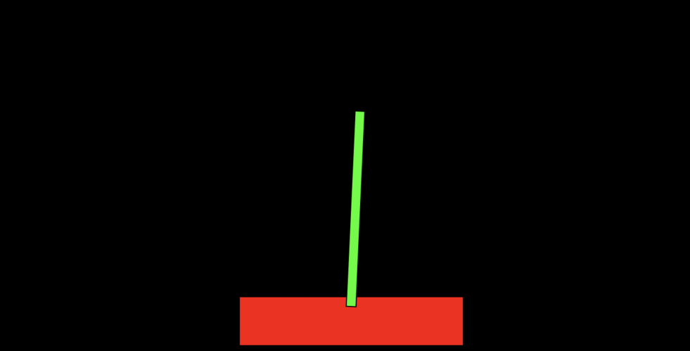

Neural Network Analysis Tool
This was my final project at General Assembly. I wanted to create something I might use, and this was something I'd desired in the past. I created a rails database to archive data from running a genetic algorithm, and then used some javascript libraries to graph that data is various ways, including having a visual representation of the neural network itself.